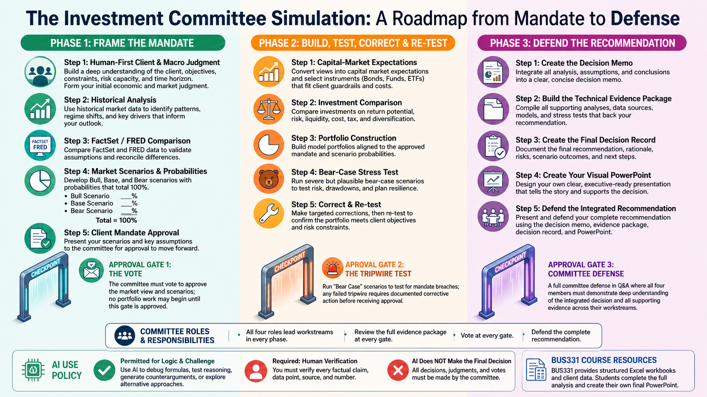

Follow the decision path. Build the analysis. Defend your recommendation.
What BUS331 provides—and what your committee creates
BUS331 provides structured Excel workbooks and client data. Your committee completes the analysis, reaches its own conclusions, and creates its own final PowerPoint presentation.
See the whole path
From mandate to defense
Use this visual to orient your committee before you begin the detailed phase checklists below.

This visual is an orientation tool. The phase checklists below remain the complete guide to required work and approval readiness.
Before you begin
Set up your committee for the full project
Confirm the four committee roles and your three assigned clients.
Create a shared team workspace and agree on a file-naming system.
Read the current phase checklist together before beginning work.
Schedule a short committee meeting before each approval gate.
Your path
Complete one decision before moving to the next
Phase 1
Frame the Mandate
What must be true about markets and each client before we are willing to invest?
Approval gateApprove or revise the common market view and all three client mandates. Portfolio construction cannot begin until the vote and action items are recorded.
Do this in order
1
Set roles, client assignments, and the team workspace.
2
Complete the detailed macro analysis in the provided workbook: review historical evidence, form a human-first interpretation, and document sources.
3
Compare the committee view with FactSet and/or FRED evidence, then create bull, base, and bear scenarios with probabilities totaling 100%.
4
Analyze each client's goals, constraints, risk, and unresolved information gaps.
5
Translate the macro outlook into a client-specific mandate, including return target, risk limit, and drawdown tripwire.
6
Hold Gate 1: challenge the evidence, vote, and record required revisions before any portfolio construction begins.
Definition of done
The macro workbook documents historical analysis, consensus comparison, and weighted bull, base, and bear scenarios.
Each client has objectives, RRTTLLU constraints, a return target, risk limit, drawdown tripwire, and identified information gaps.
The committee can explain how its macro outlook changes each client mandate.
All four members have recorded the Gate 1 vote and any revision actions.
Does each portfolio earn its place inside the client mandate after costs, constraints, and the instructor-issued Scenario Reveal?
Approval gateApprove, revise, or reject each client portfolio. The baseline snapshot must precede the Scenario Reveal, and a revealed breach cannot receive approval without a documented corrective trade and re-test.
Do this in order
1
Reopen the approved client mandate before researching investments.
2
Use the structured workbooks to develop capital-market expectations and draft allocations.
3
Research and compare candidate bonds, mutual funds, and ETFs against client guardrails.
4
Build the proposed portfolios, identify the purpose of every holding, and submit the locked baseline snapshot before the Scenario Reveal.
5
After the instructor releases the client-specific Scenario Reveal, apply its exact inputs, identify the client consequence, correct the required breach, and re-test.
6
Hold Gate 2: approve, revise, or reject each client portfolio and record the decision.
Definition of done
Each client portfolio traces back to an approved mandate and has a stated purpose for every holding.
Evidence supports the material investment choices and their client fit.
The baseline snapshot was submitted before the Scenario Reveal; each revealed-scenario breach has a documented corrective trade, trade-off, and full re-test.
All four members have recorded the Gate 2 vote and any revision actions.
Can every committee member defend the same evidence-linked recommendation to the panel?
Approval gateIssue the final recommendation, record dissent or reservations, and defend the evidence. Every member must answer questions outside the workstream they led.
Do this in order
1
Convert approved analysis into a clear committee recommendation for each client.
2
Create the decision memo and technical evidence package.
3
Design and build the committee's own visual PowerPoint presentation.
4
Rehearse cross-functional questions and the strongest trade-offs.
5
Hold Gate 3, submit the required package in Canvas, and defend the recommendation.
Definition of done
The memo, evidence package, and presentation tell one consistent recommendation story.
A reviewer can trace each major claim to evidence.
Every member has rehearsed and can defend both owned work and the integrated decision.
The team has checked Canvas for the correct required files and deadline.
Canvas remains the authority for due dates, submission links, and course-grade weights. Use this roadmap and the phase checklists to organize your work; use Canvas to confirm the date, group-submission rules, and exact files required at each gate.